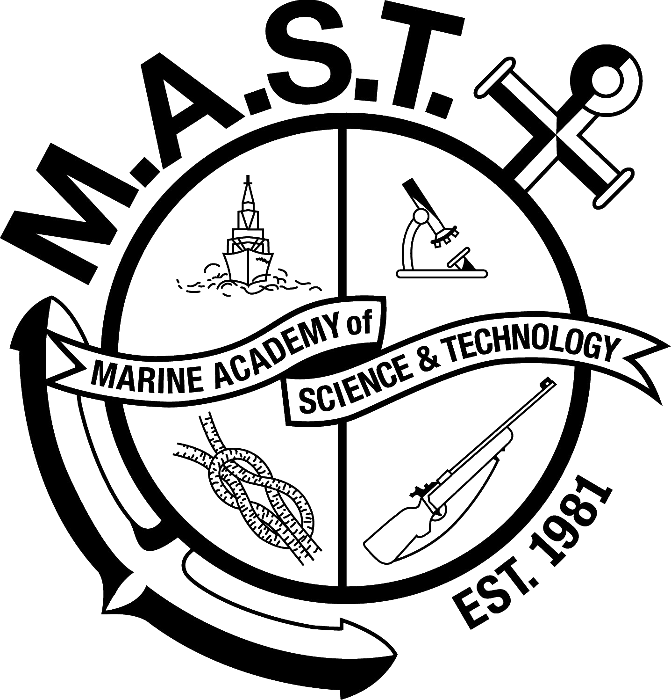
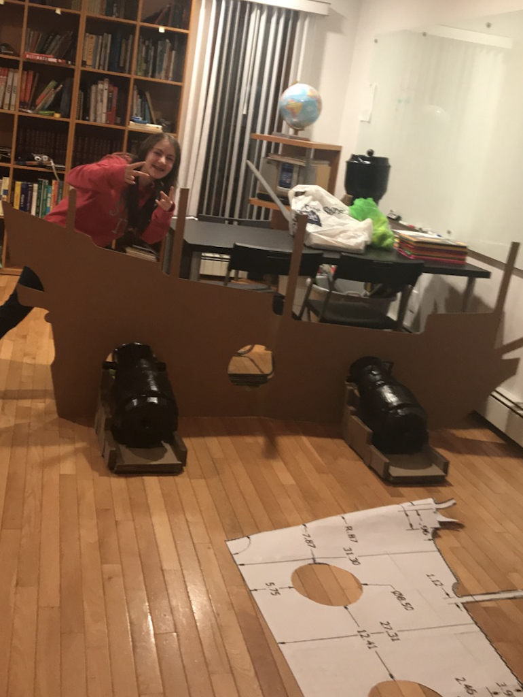
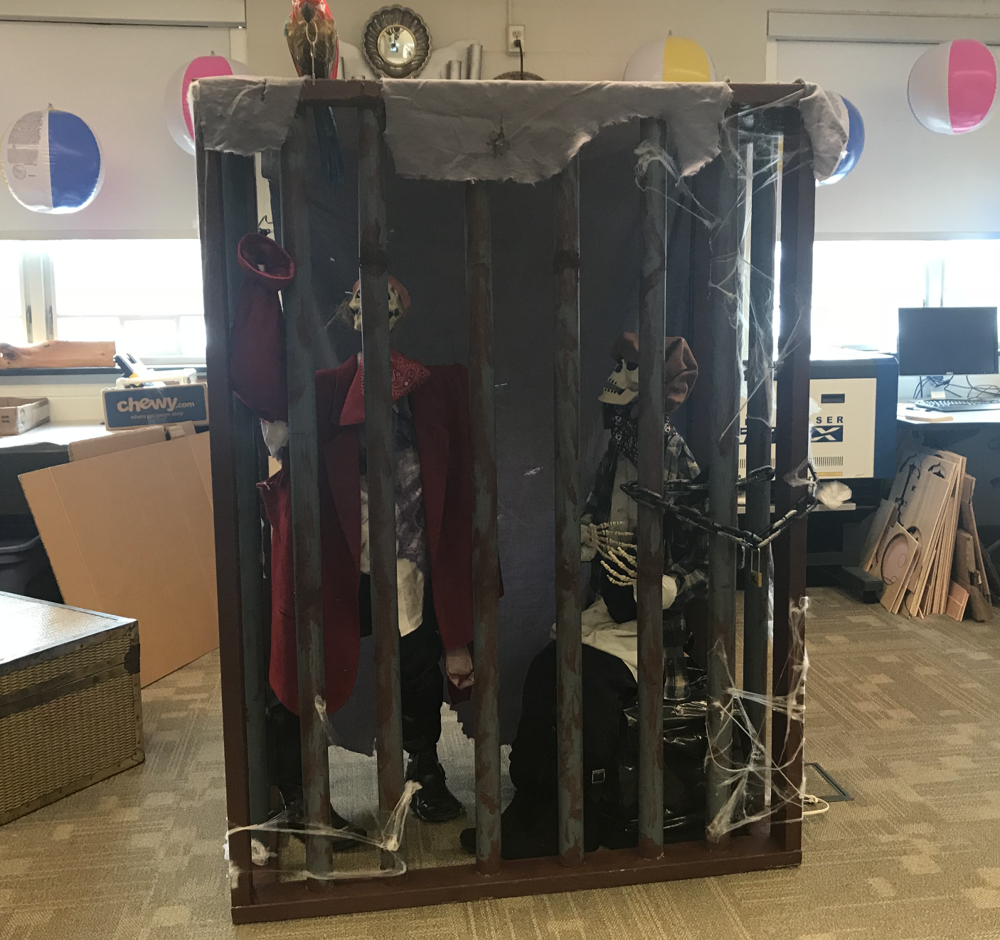
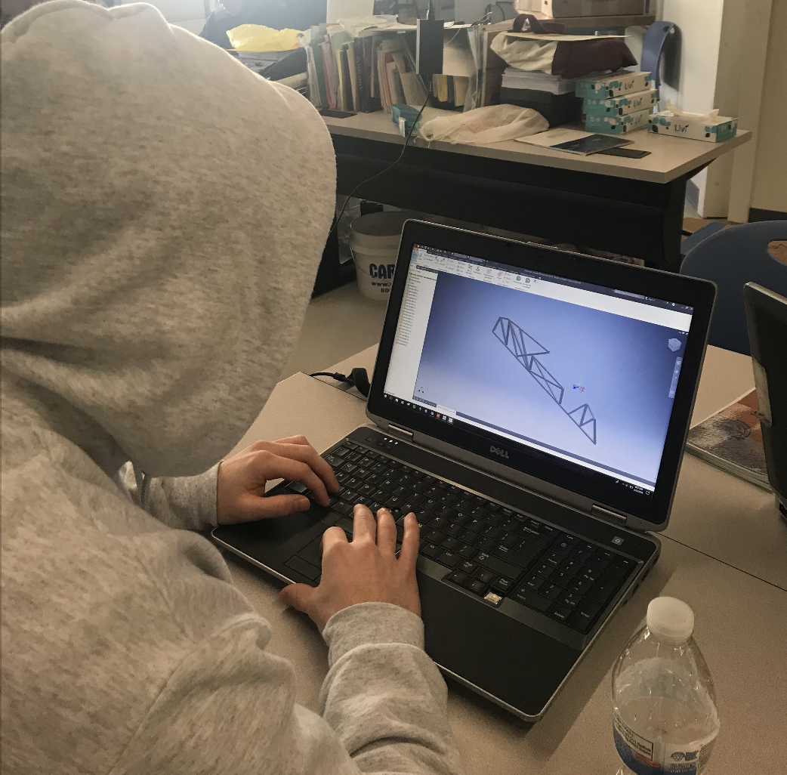
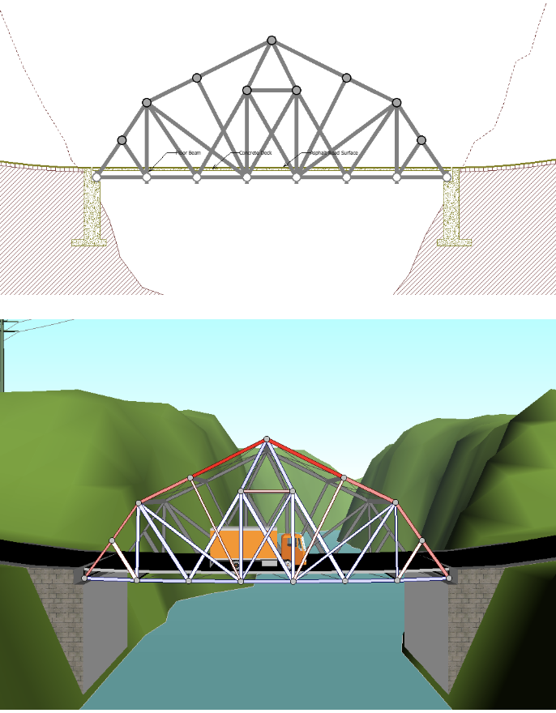
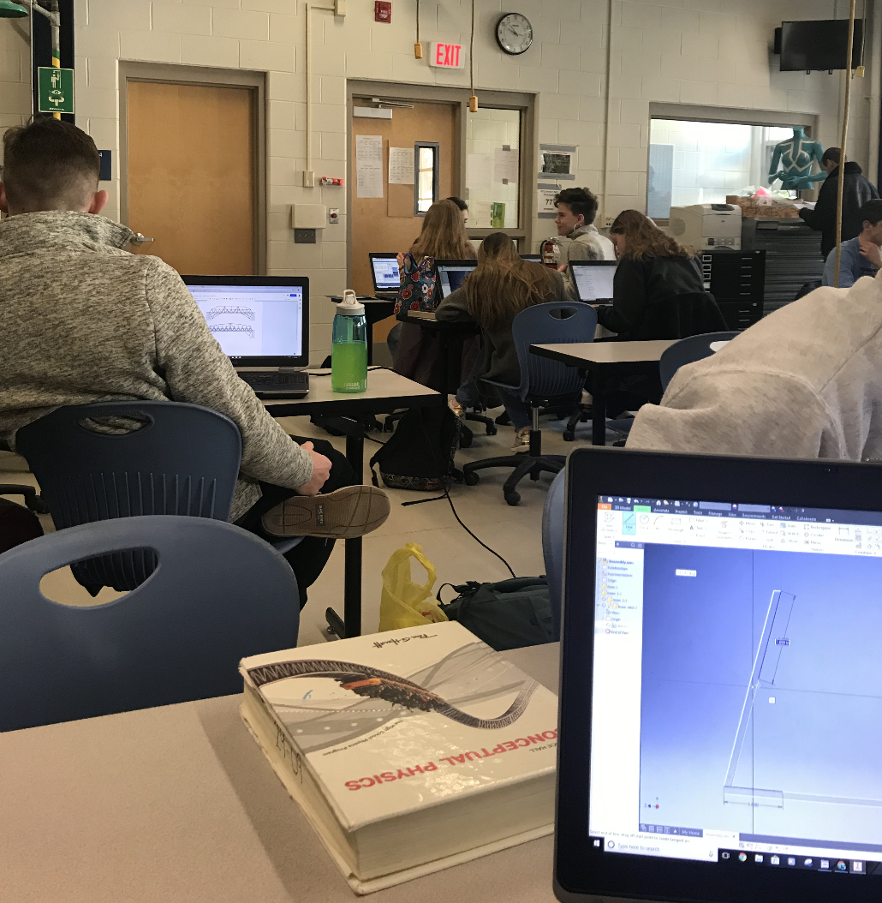

MARINE ACADEMY OF SCIENCE AND TECHNOLOGY
Highlands, New Jersey

MISSION STATEMENT
The Marine Academy of Science and Technology will strive to develop literate, ethical and productive members of society empowered to meet the challenges of a global community by providing a rigorous academic environment with a core specialization in marine science and technology.
COURSES
COMPUTER AIDED DESIGN
The goal of CADD is to introduce the process of how to design, develop, locate, summarize, organize, synthesize and present information. CADD begins with lessons in problem solving and uses the design loop to help students focus and think critically. CADD starts the year with manual drafting to teach the students how to get their ideas on paper. We quickly progress to using the computer to accomplish the same goal, gradually adding new software programs or improving use of popular software programs. The course allows students to gain hands-on experience using various software programs to produce written and graphical representations of their work or a solution to a given problem.
jcuttrell@ctemc.org; Mr. John Cuttrell
TECHNOLOGY, ENGINEERING AND DESIGN
This course exposes students to technology, engineering and design practices through a problem solving and design process approach. Further exposure focuses on design principles, and a wide range of technical skills provides a deeper experience while integrating Math and Science. The course engages the learner in assignments and projects using a problem solving and design process repeatedly so that the process becomes second nature. Practices include technical writing, technical drawing and illustration, material processing and use of hand and power tools. Students are given hands-on activities to develop and practice the basic concepts for design and problem solving, and document ideas, research, progress, developmental work and results through technical writing and illustration.
Ms. Wendy Green; wgreen@ctemc.org
Our TSA's chapter official advisor, Ms. Green has been a technology teacher at MAST ever since 1999. She teaches a technology, engineering and design class with our sophomores.
SYSTEMS ENGINEERING I
The students use prior knowledge of the design process and drawing techniques such as hand sketching and computer aided drafting to solve problems related to systems and subsystems. Emphasis is placed on research, documentation and evaluation of solutions to design problems. The organizational structure of this course is based on a “central project” philosophy to provide a realistic and meaningful experience and to allow for guidance and support through the community and industry. The course will allow students to develop and practice the basic concepts for design and problem solving, elaborate on concepts as a preliminary design, and develop the preliminary design into a set of “contract” drawings and specifications. Design work continues into the construction phase to process materials, assemble components, systems and subassemblies into an integrated whole. Virtually all the related design and engineering tasks will be done using a variety of computer applications.
chzrada@ctemc.org ; Mr. Christopher Zrada


